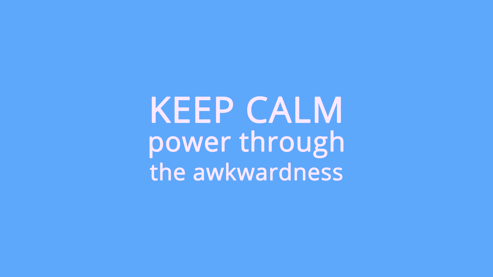
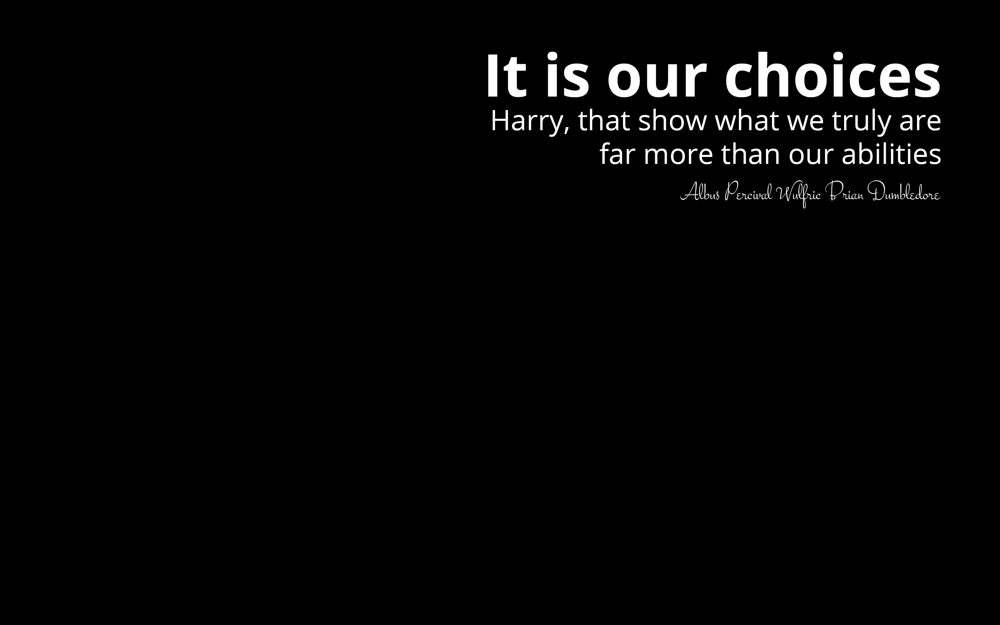

Keep Calm and Power Through The Awkwardness.
A picture I took with iPhone 6Plus camera (no post processing), walking here and I used it as my iPhone lock screen and wallpaper for a while.

"It is our choices Harry, that show what we truly are, far more than our abilities" - Albus Percival Wulfric Brian Dumbledore.
I use this as a skin for my Macbook see a picture here